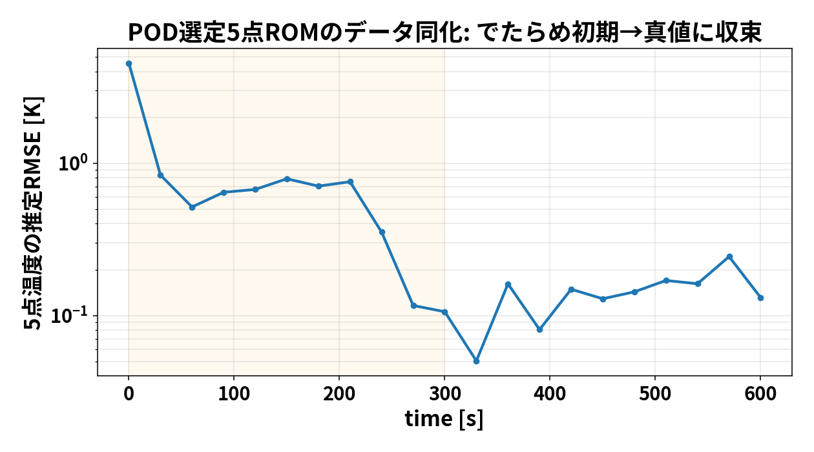

第3回は アンサンブルカルマンフィルタ（EnKF） です。前回（blog_002）の OI は 背景共分散 $B$ を 決め打ちで固定しました。EnKF はここを変えて、
たくさんの”分身（アンサンブル）“を走らせ、その散らばりから共分散を毎回作り直す
のが特徴です。これで 発熱量 $Q$ のような未知パラメータまで当てられるようになります。 今回も 節点を減らした具体例で、行列を手で追いながら理解します。
OIとの一言の違い：OI は $B$ を人間が置く／EnKF は $B$ を分身の散らばりが教えてくれる。
「予報がどれくらい外れるか（共分散 $B$ ）」を人間が決めるのは難しい。 そこで EnKF は、少しずつ違う初期値・パラメータを持った $N$ 個の分身を用意して、 全部シミュレーションで前進させます。その バラけ方（散らばり）そのものが共分散になります。
分身1 ─┐
分身2 ─┼─ みんな少しずつ違う → シミュレーションで前進
⋮ │ → 散らばり方から共分散 C を作る
分身N ─┘この共分散は状況に応じて毎サイクル作り直される（＝流れ依存）。ここが固定 $B$ の OI との決定的な差です。
$$x_a{(m)}=x_f{(m)}+K(y+{(m)}-Hx_f{(m)})(m=1,,N)$$
更新後の分身の 平均が推定値、散らばりが不確かさです。
状態を2点の温度 $x=(T_1,T_2)$ とし、分身を 4つ用意して前進させたら、次の予報になったとします。
| 分身 | $T_1$ | $T_2$ |
|---|---|---|
| m1 | 26 | 24 |
| m2 | 30 | 27 |
| m3 | 28 | 25 |
| m4 | 32 | 28 |
| 平均 | 29 | 26 |
平均からのズレ（deviation）:
| 分身 | $T_1$ | $T_2$ |
|---|---|---|
| m1 | −3 | −2 |
| m2 | +1 | +1 |
| m3 | −1 | −1 |
| m4 | +3 | +2 |
標本共分散は $C=_m x{(m)},x{(m)T}$ （ $N=4$ なので $1/3$ ）:
$$C= = =$$
読み方： $C_{12}=4.67>0$ 、つまり 「 $T_1$ が高い分身は $T_2$ も高い」と分身たちが教えている。 この相関は人間が置いたのではなく、シミュレーションの結果から自動で出てきたものです。
点1を観測（ $H=(1, 0)$ ）、観測ノイズ $R=0.3^2=0.09$ 。
$$
観測 $y=30$ （真値 $T_1=30$ 付近）。予報平均のハズレは $30-29=1$ 。平均の更新は
$$x_a=x_f+K = + =$$
| 点 | 予報平均 | 同化後平均 | 真値 |
|---|---|---|---|
| 点1（観測） | 29 | 29.99 | 30 |
| 点2（未観測） | 26 | 26.69 | 27 |
観測した点1はほぼ真値へ、未観測の点2も標本共分散の相関を通じて真値へ寄りました。 やっていることは OI と同じ更新式ですが、共分散 $C$ を分身から作ったのが違いです。 さらに更新後は 分身の散らばりが縮む（不確かさが減った、を表す）。
OI（blog_002）では、固定 $B$ のもとで 発熱量 $Q$ が真値に届きにくいという弱点がありました （ $_Q$ を100倍振っても $Q$ は約9 Wで頭打ち）。EnKF はここで差が出ます。
EnKF では状態に $Q$ も入れて 拡大状態 $z=(T_1,,Q, h)$ にします。分身ごとに $Q$ を少し変えて前進させると、
だから観測の予測外れを $Q$ にも正しく配分でき、 $Q$ が真値へ寄ります。 本研究の実ソルバEnKFでは、でたらめ初期から
まで当てられました（OIの約9 Wと対照的）。下の図は ROM 版 EnKF での $Q,h$ 推定の収束です。
発熱量 $Q$ が真値へ収束していく様子（ $h$ は主に冷却期に効くため収束はゆるやか）。

同化を重ねるごとに全点温度RMSEが下がる。
EnKF の弱点は 重さです。共分散を作るために 分身を $N$ 個、毎サイクル全部前進させます。 実ソルバ（OpenFOAM＋FrontISTR）でこれをやると、
となります。「軽いが $B$ が硬い OI」対「重いが $Q$ まで当たる EnKF」というトレードオフです。 この重さを避けるために 予報モデルを ROM に置き換えるのが、106 の POD+Q-DEIM の役割でした （0〜600秒が数秒で回るので、EnKF を何度も試せる）。
| 回 | テーマ | キモ |
|---|---|---|
| blog_001 | CHT→熱膨張＋熱伝達率 | 固体＋空気を一体で解き、温度→変形、面ごとの $h$ を診断 |
| blog_002 | OI データ同化 | 感度で観測点を選ぶ／固定 $B$ で軽く更新／ $Q$ は弱可同定 |
| blog_003 | EnKF | 分身の散らばりから共分散を作り、 $Q$ まで同定／ただし重い |
3つを貫くメッセージは、「少数の観測から全体（温度・変形・熱源）を推定する」 こと。 そのために どこを測るか（感度）・どう共分散を作るか（固定 $B$ か分身か）・どう軽くするか（ROM） を 使い分ける、というのが本研究の骨格です。
00_data_assimilation_algorithm.md00_data_assimilation_algorithm.md の E 節02_full_story.md